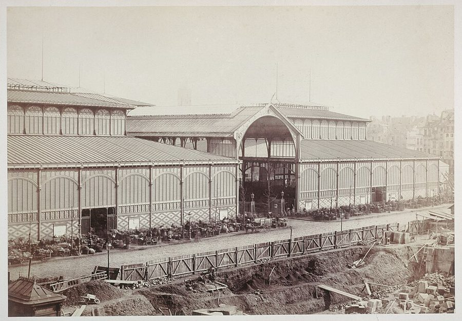
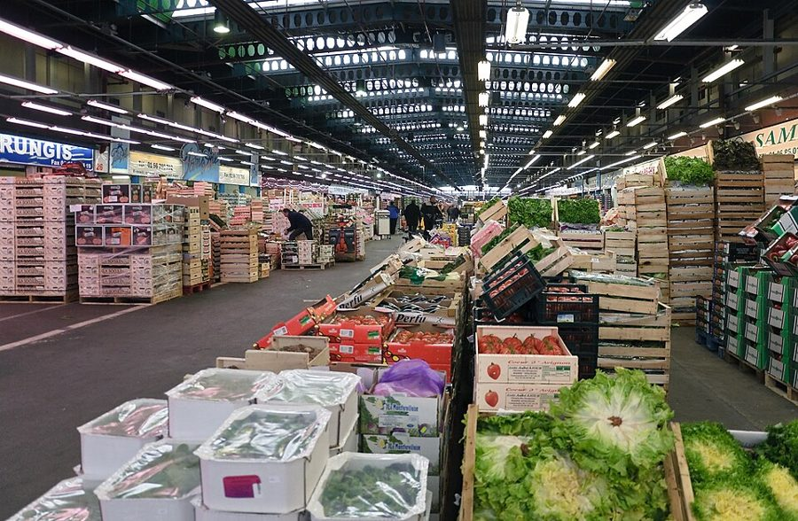
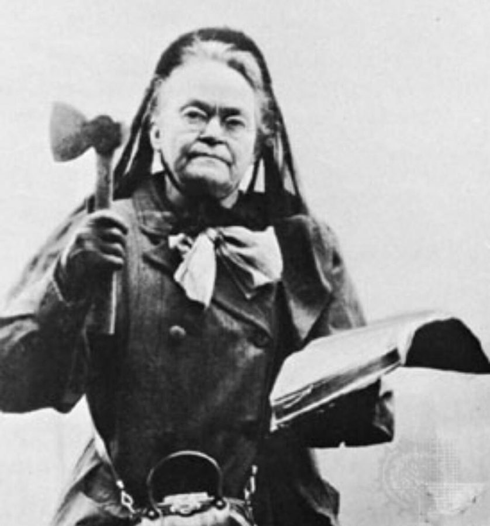
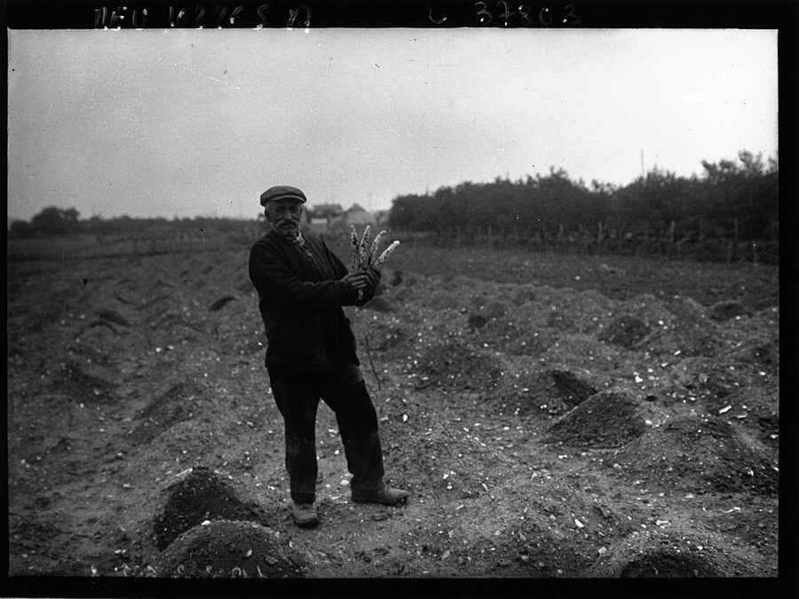
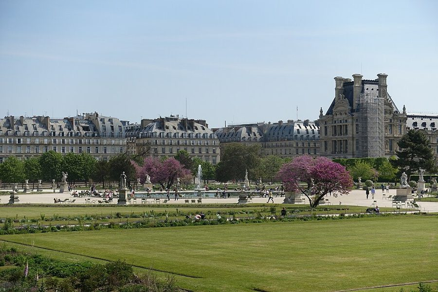

这一篇在做什么
1998 年 9 月，加州名厨 Alice Waters 来巴黎，为在卢浮宫开一家餐厅奔走。作者陪她和一位研究老品种蔬菜的学者，天不亮去逛 Rungis 批发市场；又自告奋勇在家请她吃饭，做一道要炖七个小时的羊腿。吃饭那天正赶上美国公布斯塔尔报告。全篇一边写 Alice 这个人和她心里的法国，一边写作者自己手忙脚乱的厨房。读的时候抓两条线：Alice 想象的法国和眼前的法国差在哪；作者为什么拿那只羊腿收尾。
Alice Waters，2007 年在加州纳帕一座酒庄。原图说明是她为一场聚会掌勺，带来了当地的新鲜农产品。比这一篇晚九年。David Sifry，CC BY 2.0，维基共享资源
读之前：这篇的来历
这一篇原题 The Millennial Restaurant（千禧年的餐厅），刊于《纽约客》1998 年 10 月 26 日那一期。从文中看，它写于 1998 年秋天：那顿晚饭正赶上斯塔尔报告公布（9 月 11 日），作者说自己用法国烤箱已经三年。一家人这时已在巴黎住了三年，Luke 已经上学，常因为不肯午睡被学校叫家长接回家。它在书里第四部分「描绘世界的机器」：前一篇写作者最爱的 Balzar 小馆被 Flo 集团收购、熟客起来抗争，后一篇是第四本圣诞日记，开头就是房东要收回房子。前一篇和这一篇都绕着同一个问题：美国人爱的那个法国，还在不在。第 12 篇「法国菜的危机」已经提过 Alice Waters 和她的 Chez Panisse，说有人担心烹饪的缪斯搬去了伯克利；这一篇是她本人来了巴黎。
一个美国人想帮法国找回它最好的传统，这件事是动人的，还是天真的？作者站在哪一边？
读的时候带着这几个问题。不用先找答案，读完回来对照「检查一下理解」。
Alice 和 Antoine 都迷恋法国的老蔬菜。他们讲究的是同一回事吗？§1
有人说 Alice 一边开昂贵的餐馆、一边反对商业文化，是伪善。作者怎么回应？他是认真的还是在开玩笑？§1
斯塔尔报告和那顿晚饭被放在同一个晚上，作者想拿什么跟什么对照？§2
羊腿失败了。作者先说了一个技术原因，最后又给了一个更大的原因，分别是什么？§2 §3
这一篇的路线
开头一连说了三次「情绪高涨」，分别挂在三个人身上：Alice 带出她的卢浮宫餐厅，Antoine 带出被拆掉的老巴黎和失传的蔬菜，作者带出自己要做的那顿晚饭。§1 最长，在 Rungis 市场的清晨里三条线轮流出场，中间插了两段倒叙：Alice 1965 年初到法国，伯克利的六十年代。读译本时会觉得作者从芦笋忽然跳到自己的菜谱，又从博物馆跳到尼克松，那是在换线。§2 是那顿晚饭，一个问句反复出现，答案一拖再拖；§3 是附记，两段收尾。
晚饭
Alice
法国与美国
§1
§2
§3
清晨的 Rungis
卢浮宫的邀请
中央市场迁走
失传的萝卜
众人眼里的她
绿芦笋之争
要请她吃饭
1965 年的街市
白无花果
找菜谱、请帮手
太小的场地
伯克利和六八年
斯塔尔报告
羊腿怎么样？
那家客栈
报纸标题
七小时羊腿
← 倒叙：初到法国
← 倒叙：六十年代
← 这一问拖了四次
本站示意图。从上往下是阅读顺序，每个点是一个场面，落在哪条竖线上就是哪条线的事：橙点是作者的晚饭，绿点是 Alice 和她的餐厅，蓝点是法国与美国这个大题目。横线是原书的分隔。 作者落在哪： 作者喜欢 Alice，替她挡掉「伪善」的指责，却一路让理想碰上现实：市场里的菜整齐划一，卢浮宫的场地太小，照怀旧食谱炖的羊腿也砸了，那家山中客栈也不真是书里写的那样。Alice 自己说，理想的餐馆也许只在人心里。作者在附记里猜，七小时羊腿属于更艰苦的年代，在人人急着享乐的今天，也许已经没有它的位置。
分节地图
原书这一篇有两处分隔，分成三节。每一节的粗体是读译本时认得出的场面；下面的斜体是英文这一节开头的几个词，打开电子书搜它就能跳到那里。读完一节打个勾。
天不亮逛 Rungis，芦笋之争，白无花果约 3800 词 Not long ago, in the brown … 全篇的主体：三条线轮流出场。留意两段倒叙，和作者替 Alice 辩护的那几段。 传真机吐出斯塔尔报告，羊腿上桌约 800 词 On the day of our dinner … 「羊腿怎么样？」问了四次才回答。最后落在那家客栈上。 附记：《费加罗报》的标题，七小时羊肉约 200 词 Postscript: After Alice Waters left … 两段：Alice 撞上真实的法国；作者对七小时羊腿的猜测。
背景：作者默认你知道的事
按在书里出现的顺序排，标题前是节号。
§1 Alice Waters 和 Chez PanisseAlice Waters 生于 1944 年，1971 年 8 月在加州伯克利开了 Chez Panisse，坚持用附近农场的当季食材，被看作美国「从农场到餐桌」潮流的先驱。她 1965 年在法国留学，§1 她回忆穆夫塔街（rue Mouffetard）的街市、诺曼底的生蚝和苹果酒，说的就是那一年。1995 年她在伯克利一所公立中学办了「可食校园」（Edible Schoolyard），让学生自己种菜做饭；§1 末尾她对教师的演讲，讲的就是这类校园菜园。书里说她五十来岁、二十七年前借一万美元开店，和这些年份对得上。
Sally Clarke Sally Clarke 伦敦 Clarke’s 餐馆的主厨，书里说她是 Alice 的众多「精神教女」之一，这天也跟着逛市场。
Aubert de Villaine Aubert de Villaine 勃艮第罗曼尼-康帝酒庄（Domaine de la Romanée-Conti）的共同主管。§1 引他的话，说 Alice 是「桅顶上的瞭望者」。
Wolfgang Puck Wolfgang Puck 奥地利出身的美国名厨，把自己的名字做成了冷冻比萨、罐装汤一类的超市商品。作者说 Alice 处处都是他的反面。
§1 从中央市场到 Rungis中央市场（Les Halles）在巴黎市中心，一般从 12 世纪末腓力二世建市场大棚算起；19 世纪中叶换成建筑师巴尔塔（Victor Baltard）设计的铁架玻璃大棚。左拉（Émile Zola）1873 年的小说《巴黎之腹》（Le Ventre de Paris）就写这里。书里说它「从 15 世纪起」主宰市中心，比通常的说法晚。1969 年 3 月，批发市场迁到南郊的 Rungis，老大棚 1971 年起拆除。书里说在 Rungis 买货要有许可，所以三人的参观「有点不合法」。

巴尔塔设计的中央市场大棚，1865–1866 年前后，前景还在施工。Antoine 怀念的就是这片市场。Charles Marville，CC0，维基共享资源 
Rungis 国际市场的一座果蔬馆，2011 年。书里把这些大棚比作「飞机库」，说菜都很好看，却整齐划一。Myrabella，CC BY-SA 3.0，维基共享资源 §1 纽约人的三处伤心地Antoine 把中央市场的搬迁说成「宾州车站、埃贝茨球场和 B. Altman 百货加在一起」，这是讲给纽约读者听的。宾夕法尼亚车站（Penn Station）的老站房 1963 年起被拆，激起了纽约的古建筑保护运动；埃贝茨球场（Ebbets Field）是布鲁克林道奇队的主场，球队 1957 年后搬去洛杉矶，球场 1960 年拆除；B. Altman 是第五大道上的老牌百货公司，1989 年关门。本站用的电子书里印成 Altaian’s，是排印错误。
§1 斧头、贞德和诗人：作者给 Alice 的比方作者说 Alice 若早生一百年，会挥着斧头冲进酒馆，指的是美国禁酒运动人物 Carrie Nation（1846–1911），她在 1900 年前后拿斧头砸酒馆出了名。作者说两人「动机相似」，本站的理解是：都相信改掉日常的吃喝就能改良社会。La Pucelle（贞女）是法国人对圣女贞德的称呼，Emily Dickinson 是深居简出的 19 世纪美国女诗人；de Villaine 说 Alice 像两人的混合，作者后面又叫她「伯克利的贞德」。

Carrie Nation 一手斧头一手《圣经》，约 1900 年。作者不详，公有领域，维基共享资源
William Bennett William Bennett 美国保守派政治人物，里根时期任教育部长，1993 年编了畅销的《美德书》，以讲家庭和道德著称。作者说 Alice 看水芹的眼神，像他看一桩长久的婚姻。
§1 terroir 和「有机」terroir 指一块地方的土壤、气候，连同当地世代相传的种法和口味，法国葡萄酒和农产品的产地制度就建立在这个观念上。「有机」（organic）是一套不用化学农药和化肥的种植规则。书里 Antoine 跟 Alice 说，在法国，terroir 比有机的规矩更要紧；Alice 见到好番茄，开口问的却是「是有机的吗」。一种看出身，一种看做法，两人的讲究并不完全是一回事。
§1 阿让特伊的芦笋和无花果阿让特伊（Argenteuil）在巴黎西北的塞纳河边，19 世纪以芦笋出名。白芦笋和绿芦笋常是同一种植物：把嫩茎埋在土垄里不见光，长出来是白的；任它冒出地面见光，就是绿的。§1 那位菜农说时髦大厨要绿芦笋，因为摆盘好看。书里 Antoine 讲的阿让特伊白无花果、冬天把枝条压进土里防冻，本站没有另外核实，按书里的说法读即可。

阿让特伊的芦笋田，1933 年的新闻照片。田里一行行土垄，白芦笋就是埋在里面长成的。Agence de presse Meurisse，公有领域，维基共享资源 §1 卢浮宫里的装饰艺术博物馆装饰艺术博物馆（Musée des Arts Décoratifs）在卢浮宫宫殿西北的马尔桑翼，门开在里沃利街（rue de Rivoli），背面对着杜伊勒里花园（Tuileries）。它不归卢浮宫博物馆管，由私立的「装饰艺术」协会（Les Arts Décoratifs）经营。书里说 David-Weill 夫人是馆长；按装饰艺术协会自己的资料，她 1994 到 2013 年是这个协会的主席。Tati 是巴黎的平价连锁百货，粉白格子购物袋人人认得，书里比作美国的廉价杂货连锁 Woolworth’s。

从杜伊勒里花园望马尔桑馆（右边搭着脚手架的那座），2016 年。装饰艺术博物馆就在这一翼，Alice 想在门外种菜园。Guilhem Vellut，CC BY 2.0，维基共享资源
Hélène David-Weill Hélène David-Weill 巴黎社交界和艺术圈的名流，主持装饰艺术协会约二十年。是她请 Alice 来开餐厅。
Francis Ford Coppola Francis Ford Coppola 《教父》的导演，也在加州纳帕经营酒庄。书里说最早是他向 David-Weill 夫人推荐了 Alice。
石冈瑛子 Eiko Ishioka 日本设计师，凭电影《惊情四百年》（1992）的服装得过奥斯卡。Alice 说餐厅要请她来设计。
§1 de Groot 和《繁花炉边客栈》Roy Andries de Groot 是美食作家，双目失明。他的 The Auberge of the Flowering Hearth（本站译作《繁花炉边客栈》）1973 年出版，写阿尔卑斯山沙特勒斯（Chartreuse）山谷里一家小客栈的菜。他本来是去写山里修士酿的同名药草酒。书里说它一半是食谱，一半像《消失的地平线》（Lost Horizon）的翻拍：那是 James Hilton 1933 年的小说，写喜马拉雅山里的世外桃源香格里拉。
沙特勒斯山谷里的大沙特勒斯修道院，2006 年。同名药草酒最初由这里的修士酿造。de Groot 写的客栈不在照片里。Floriel，CC BY 2.5，维基共享资源
§1 伯克利、1966 年和「喂你的脑袋」1960 年代的伯克利是美国学生运动的中心。Alice 说她 1966 年帮 Robert Scheer 竞选国会，落败后决定「自己开创一个世界」。Berkeley Barb 是当地的地下报纸。soixante-huitards 指经历 1968 年五月风暴的那一代法国人。尼克松爱吃番茄酱拌茅屋奶酪，是流传很广的轶事。「Feed Your Head」是 Jefferson Airplane 1967 年的歌《白兔》的最后一句，整首借《爱丽丝漫游奇境》写迷幻药。本站的看法：这一篇的题目 Alice in Paris，大概也在暗用那个爱丽丝。
Robert Scheer Robert Scheer 记者，1966 年以反越战的立场参加民主党的国会议员初选，落败。书里说他如今是洛杉矶的知名记者。
Kermit Lynch Kermit Lynch 伯克利的葡萄酒进口商，专门把法国小酒农的酒卖到美国。书里说他和 Alice 差不多同时起家。
§2 斯塔尔报告、《好家伙》和华氏度独立检察官斯塔尔（Kenneth Starr）关于克林顿和白宫实习生莱温斯基（Monica Lewinsky）的调查报告，1998 年 9 月 11 日由众议院公布，细节露骨，美国媒体几乎全文刊出。电影《好家伙》（Goodfellas，1990）的最后一段，Ray Liotta 演的黑帮分子一边被直升机跟踪，一边在家做饭、运毒，乱成一团。羊腿失败的技术原因：美国菜谱写的 200 度是华氏，约合摄氏 93 度，作者照摄氏 200 度烤，温度高了一倍还多。
Martina Hingis Martina Hingis 瑞士网球选手，1997 年 16 岁时成为世界第一。作者拿她比 Alice：高手根本不会注意你的反手好坏。
Buddy Bell Buddy Bell 1970、80 年代美国职棒的三垒手，以守备出名。作者说羊腿像他的手套，故意精确到「1978 年前后」。
词与短语
只收中文译文多半传不出原味的地方：熟词生义、反话和挖苦、典故、夹在英文里的法文。读译本读到觉得别扭、不知道作者在说什么时，来这里找那一节的；斜体小字是原句里的几个英文词，在电子书里搜它就能找到原文。
§1 天不亮逛 Rungis，芦笋之争，白无花果
mildly illicit
… taking a mildly illicit walk through …
有点不合法的
往轻里说：所谓「不合法」只是没办进场许可（§1 第五段才交代）。一本正经的大词配一件小事。
a heightened emotional state
… all were in a heightened emotional state …
情绪高涨
像心理报告的措辞。作者接着一人一段地重复这个短语，给 Alice、Antoine 和自己各找一个理由，是全篇的骨架，也是自嘲。
storming through saloons with a hatchet
… storming through saloons with a hatchet …
挥着斧头冲进酒馆
影射禁酒运动的 Carrie Nation（见「背景」）。后半句说如今这种女人在蒸四季豆，「动机相似」：把 Alice 的饮食理想说成一场道德改良运动，半是敬佩半是调侃。
the unmoved mover
… the unmoved (though crisply cooked) mover …
不动的推动者
亚里士多德哲学里推动万物、自己不动的第一因。作者把它安在一根胡萝卜身上，括号里还补一句「虽然煮得脆生生的」，拿哲学的大词开 Alice 理想的玩笑。
très grande dame
… the très grande dame who is …
（法文）了不起的贵妇人
grande dame 英文里也用，指有地位的老派贵妇；加一个 très（非常），口气更夸张，带点揶揄。
principal forager
… a possible “principal forager,” on the …
首席采办
forager 是四处觅食、采集的人。作者紧接着说这是照 principal dancer（芭蕾舞团的首席舞者）的说法起的，给找菜的人封了个剧团头衔。
primordial sin
… is the primordial sin of modern France …
原罪
宗教的大词用在一个批发市场的搬迁上。这是 Antoine 的看法，作者转述时带着笑意，但并没有否定他。
not to say
… beautifully, not to say longingly, of the …
甚至可以说
不是「不说」。not to say X 意思是「说成 X 也不为过」：他写失传的菠菜和洋葱，写得美，简直是在害相思。
contrary
… a perfect, crisp, contrary French mind …
爱唱反调的
形容人时 contrary 是「拗、偏要跟人反着来」。作者说他是困在美国身体和嗓音里的一颗法国脑袋，这个词就是法国式头脑的标志。
girolles
… bins of girolles, crates of shiny …
（法文）鸡油菌
一种金黄色的野生菌，法国秋天常见。作者后面还在这堆菌子前犹豫要不要改菜单。
terroir
… the French sense of terroir—of the …
（法文）风土
作者在破折号后自己解释了：一个地方的味道和传统。英文没有对应的词，所以直接用法文（见「背景」）。
a hopeless métier
… anyway, it’s a hopeless métier.
没奔头的行当
métier 是法文的「行当」。括号里作者挖苦：法国商人个个都说生意没指望、要不干了，去中国卖导弹的大概也会这么说。这是讨价还价的姿态，不必当真。
materfamilias
… making her a kind of materfamilias …
一家之母
拉丁词，对应常见的 paterfamilias（家长）。说一代厨师都把她当作家族里的母亲。
hashslinger
… less as a superior hashslinger than …
（廉价饭馆的）厨子
美国俚语，指廉价小饭馆里的厨子或伙计，口气随便。前面加 superior（高级的），意思是：在 de Villaine 眼里，她不只是个手艺好的厨子。
La Pucelle
… cross between Emily Dickinson and La Pucelle.
（法文）贞女，即圣女贞德
法国人对贞德的称呼。一个隐居的诗人加一个领兵的圣女，纯净又有使命感。§1 后面作者又叫她「伯克利的贞德」。
au fond
… if it is not, au fond, spiritual.
（法文）说到底
de Villaine 是法国人，话里夹着法文。整句说：感官享受如果骨子里不是精神性的，就算不上真正的感官享受。
happens not to be in your possession
… happens not to be in your possession …
真理恰好不在您手里
作者翻译巴黎人的口气：不跟你争，只是一起热爱真理，可惜真理此刻碰巧不在你那边。unfortunately、happens 都是客气话，底下是寸步不让。
the ravings of a lunatic
… call to mind the ravings of a lunatic
疯子的胡话
作者给 Antoine 半边脸的笑配了一句「字幕」：我非常尊重您观点之有力，尽管它让人想起疯子的胡话。前半句越恭敬，后半句越狠，要反着读。
Everybody won
… effect,” Antoine agreed calmly. Everybody won.
大家都赢了
两人说的芦笋其实正相反，Antoine 顺着「装饰效果」一让，双方都下了台。作者在笑这种体面收场的巴黎式对话。
a new coat of asphalt
… put down a new coat of asphalt …
把车道重新铺一层沥青
整个比方：一时发疯请乔丹来家里单挑篮球，干脆趁机把车道重铺一遍。说自己请 Alice 吃饭还顺便买新盘子，既心虚又借题发挥。
gigot de sept heures
… a gigot de sept heures, as it’s …
（法文）七小时羊腿
gigot 是羊腿。法国家常菜，小火炖七个小时，炖到用勺子就能分开。全篇的那道菜。
terroiristes
… two such devoted terroiristes as Alice …
风土派（谐音「恐怖分子」）
terroir 加 -iste 拼成的词，读起来就是法文的 terroristes（恐怖分子）。说这两位对「地方风味」的执着近乎激进。
my own terroir
… absolutely typical of my own terroir …
我老家的风土
自嘲：罐头番茄才是他这个美国人的「风土特产」。拿法国人最郑重的词形容罐头。
William Bennett looking at a long marriage
… the admiration of William Bennett looking at …
像 Bennett 看见一桩长久的婚姻
Bennett 是讲家庭美德的保守派（见「背景」）。Alice 看蔬菜不是饿汉见饭的贪，是道德家见美德的赞叹。左派的 Alice 配一个右派的比方，大概是作者的小恶作剧。
Berkeley Joan
… an improbable Berkeley Joan, imagining her …
伯克利来的贞德
贞德看见异象，要光复法国；Alice 仰头「看见」阿让特伊的白无花果，要让它重新长出来。improbable（不大可能的）给这份崇高打了个折扣。
scandalmongering cynic
… a fellow scandalmongering cynic and ask …
同样爱挖丑闻的犬儒
fellow 把自己也算进去：作者自嘲记者这一行，说打电话问另一个记者要菜谱「不专业」，其实是不好意思。
Lost Horizon
… half Lost Horizon remake, it tells …
《消失的地平线》
1933 年的小说，两次拍成电影，写喜马拉雅山里与世隔绝的香格里拉。说 de Groot 那本书写的客栈像世外桃源（见「背景」）。
the whole, classic nine yards
… the whole, classic nine yards, or …
全套、不打折扣
美国俗语 the whole nine yards（中间被作者插了个 classic）意为「全部、一整套」。作者接一句「或者说七个小时」，把俗语里的九码换成菜名里的七小时。
Getting Someone Else to Do the Work
… known as Getting Someone Else to Do …
「让别人来干活」
前一句先一本正经地说家里晚餐有一套「社交规矩」（Alice 会赞成的那种），首字母大写像个正式名称，揭开来却是偷懒。
CIA-worthy
… has a CIA-worthy gift for going …
够格当特工的
后面接 going into deep cover（深度潜伏），说她能混进一个地方把当地菜的秘密都挖出来。CIA 也恰好是美国烹饪学院（Culinary Institute of America）的缩写，可能是双关。
swinging
… to be much more swinging.
新潮、热闹
60 年代的口语，指时髦、玩得开。说这家老气的博物馆在 David-Weill 夫人手下要变得时髦了，比如办一场平价百货 Tati 的展览。
covers
… It’s only ninety covers, which is …
餐位
餐饮行话，一个 cover 是一份餐具，也就是一个座位。不是「封面」也不是「掩护」。
sublime California confidence
… she has the sublime California confidence …
加州人那种崇高的自信
后半句说她相信一切物质难题，加一点精神压力就能解决。sublime 是褒义的大词，用在这里带着善意的挖苦。
somebody’s got to live in the Vatican
… somebody’s got to live in the Vatican
总得有人住梵蒂冈
替 Alice 辩护：既然是一种信仰，就得有个教皇住在宫殿里。说开昂贵餐馆和讲简朴理想不矛盾，口气是玩笑，立场是认真的。
the anti–Wolfgang Puck
… in every way the anti–Wolfgang Puck.
Wolfgang Puck 的反面
Puck 把名字做成了超市商品（见「背景」）。作者紧接着说 Chez Panisse 只出食谱和一种格兰诺拉麦片。
ate the revolution
… the wise children ate the revolution …
在革命吃掉他们之前，先把革命吃了
化用「革命吞噬自己的孩子」这句法国大革命时的名言。伯克利那代聪明的孩子没被革命吞掉，而是把革命变成了吃的：从政治转向了餐桌。
soixante-huitards
… The soixante-huitards were as disappointed …
（法文）六八年那一代
soixante-huit 是「六十八」，指经历 1968 年五月风暴的人。
cottage cheese with ketchup
… who ate cottage cheese with ketchup …
番茄酱拌茅屋奶酪
尼克松的饮食轶事，代表美国主流那种寡淡、不讲究的口味。作者说美国反文化要反的正是这个，所以讲究吃本身就是一种反叛；法国没有这个对手。
Feed Your Head
… its anthem was “Feed Your Head,” not …
「喂你的脑袋」
Jefferson Airplane 的歌《白兔》最后一句，一般认为指迷幻药（见「背景」）。作者拿它说美国反文化本来就爱享乐，又和「吃」扯上关系。
slid imperceptibly into
… sex and drugs slid imperceptibly into …
不知不觉滑成了
对性和毒品的痴迷，不知不觉变成了对孩子和食物的痴迷。一代人的变化用一个轻巧的动词带过，是在笑；也可以读成作者的自画像，这本书写的正是孩子和吃。
food lord
… Conran, the London food lord, has …
餐饮大亨
Terence Conran 是英国设计师，在伦敦开了一串大餐馆。lord 在这里是「霸主、大亨」，像 drug lord（毒枭）里那样；书里刚叫过他 Sir Terence，这里换成 lord，带点打趣。
§2 传真机吐出斯塔尔报告，羊腿上桌
Nap-Averse Support Group
… be a Nap-Averse Support Group, a …
「厌午睡者互助小组」
挖苦纽约：孩子不肯午睡，在纽约会有互助小组、专门的房间，还有家长打官司争取「不睡的权利」。在巴黎，不睡就回家。
dormitively challenged
… room for the dormitively challenged, and …
「睡眠能力受限者」
戏仿美国政治正确的委婉语，如 vertically challenged（身高受限，即矮）。dormitively 是从 dormitive（催眠的）变出来的怪词。
the last reel of Goodfellas
… spinning in the last reel of Goodfellas
《好家伙》的最后一本胶片
reel 是电影胶片盘，last reel 就是结尾那一段（见「背景」）。作者本想像 de Groot 在山里悠闲做饭，结果像黑帮片里那个被直升机盯着的厨子。
louses
… such a bunch of louses.
一帮混蛋
louse 本是虱子，复数是 lice；指「卑鄙的人」时，复数也可以说 louses。这是清教徒一方对这代人的评价，不是作者的。
as American as apple pie
… both as American as, well, apple pie.
像苹果派一样美国
固定说法，意为「地道的美国货」。中间插一个 well，像临时找词；而当晚的甜点正好是苹果挞。享乐和清教两道「菜」都是美国特产。
listening between the sentences
… Listening between the sentences, you could deduce …
听话听音
改自 read between the lines（读出字里行间的意思）。Alice 嘴上没说泄气，但听得出她明白这件事比想象的难。
a third baseman’s mitt
… resemblance to a third baseman’s mitt …
三垒手的手套
棒球手套是厚皮做的，羊腿就炖成了那样。还要精确到某个球员 1978 年前后的那只，是在学 Antoine 那种考据癖。
interesting hints of
… interesting hints of Naugahyde, kapok, and …
带有……的有趣气息
戏仿品酒笔记的腔调（「带有黑醋栗和皮革的气息」）。可列出来的是人造革、木棉填料、旧麂皮夹克，全是不能吃的东西。
pushed it around politely on the plate
… everyone pushed it around politely on …
客气地在盘子里拨来拨去
吃不下又不好意思剩下时的动作。作者不说「没人吃」，只写这个动作。
so to speak, in Fahrenheit
… still written, so to speak, in Fahrenheit.
可以说是用华氏写的
字面就是事实：美国菜谱的温度是华氏度。so to speak 让它又像比喻：美国菜谱说的是另一种语言。具体换算见「背景」。
not what she would call a backhand
… not what she would call a backhand.
在她看来那根本算不上反手
高手不会注意你的反手打坏了，因为你打得好时她也没注意。作者用这个比方给自己找台阶，也说出 Alice 的标准高到什么程度。
Not exactly
“Well, no, not really. Not exactly,” she …
也不完全是
委婉的否定。作者马上补一句：口气听起来是「根本没有」。Alice 接下来几句说得颠三倒四，像是不忍心说破。
§3 附记：《费加罗报》的标题，七小时羊肉
You call that a ballpark?
… saying, “You call that a ballpark?”
这也叫球场？
设想日本棒球教练参观了扬基球场，报纸标题替他说「这也叫球场？」。Alice 温和地提了几句意见，到报纸上就成了「巴黎的市场令人震惊！」，效果一样糟。
inscrutable
… is an inscrutable, hypersensitive place.
高深莫测的
英文里 inscrutable 过去常被套在「东方人」身上，是个老套的刻板说法。作者刚拿日本人打完比方，转手把这个词用在法国上，像是有意的调侃。
harder sheep in tougher times
… made for harder sheep in tougher times.
为更硬的羊、更苦的年月做的
hard 和 tough 都能说肉老，也能说日子苦，一句话两层意思：老羊肉才要炖七小时，炖得起七小时的是慢日子。
take a nap
… none of us wants to take a nap …
睡个午觉
呼应 §2 不肯午睡被学校送回家的 Luke：如今大人也和孩子一样，怕睡着了会错过什么乐子。
后来
这一篇停在 1998 年秋天，卢浮宫的餐厅还只是个计划。下面接着讲书里几件事后来怎样。每条都写了核对日期，这类内容过一两年就会变。
卢浮宫的餐厅没有开成
这个计划最后没有实现。为 PBS《美国大师》拍 Alice 纪录片的导演 Doug Hamilton 2005 年说，项目不久就被法国政府的官僚程序拖垮了；Alice 本人在美国成就学院的访谈里说，她拿到的合同基本上是一家快餐式的餐厅，她拒绝了。两种说法都没给出确切年月。装饰艺术博物馆后来开的是别人的餐厅：2007 年 1 月起是 Le Saut du Loup，2016 年换成 Loulou。2021 年 11 月，她在洛杉矶 Hammer 博物馆的庭院里开了 Lulu，有报道称这是她四十年来第一家新餐馆。核对于 2026-10。依据：PBS《美国大师》导演访谈（2005），美国成就学院访谈，ElleAdore 2007 年的餐厅介绍，《费加罗报》2016 年 5 月的报道，Town & Country 和 Eater LA 2021 年 11 月的报道。
中央市场留下的「洞」
Antoine 说搬走市场在巴黎心里留了一个洞，这个洞在法文里真有名字：「中央市场之洞」（le trou des Halles）。老大棚 1971 年起拆除，原地挖成大坑，后来填进了地下的快铁枢纽和 1979 年的购物中心。2016 年 4 月 5 日，罩在上面的巨型玻璃顶「天篷」（la Canopée）落成，工程费用和外观当时都招来不少批评。巴尔塔大棚中的一座被搬到东郊的诺让（Nogent-sur-Marne）重建。核对于 2026-10。依据：巴黎市政府网站「Les Halles d’hier à aujourd’hui」，VINCI 2016 年 4 月 5 日的公告，Le Routard，Batiweb。
那份传真来的报告
斯塔尔报告公布三个多月后，1998 年 12 月 19 日，美国众议院通过弹劾克林顿的条款（作伪证、妨碍司法）。参议院审理到 1999 年 2 月 12 日，两项指控都没有达到定罪所需的三分之二票数，克林顿留任到 2001 年任满。核对于 2026-10。依据：PBS《前线》，History.com。
值得停下来的句子
It was a kind of two-course meal of radical hedonism and extreme puritanism, both as American as, well, apple pie.— §2，传真机在隔壁吐报告的那一段结尾。本站译：这像是一顿两道菜的饭，一道是激进的享乐主义，一道是极端的清教主义，两样都美国得像，嗯，苹果派。
先拿一顿饭的格式（two-course meal）去装两种国民性格，radical 对 extreme，hedonism 对 puritanism，两两相对。结尾用的是现成说法 as American as apple pie，中间插一个 well 停一下，像说话人临时找词，而当晚的甜点正好是苹果挞。中文意思译得出来，但苹果派和桌上那道苹果挞的呼应，加上 well 那一下停顿，很难一起带过去。
… in a world like that, as I say, there may just be no place left for the seven-hour gigot.— §3，全篇最后一句。本站译：……在那样的世界里，就像我说的，也许已经没有七小时羊腿的位置了。
as I say 是口语，像作者在饭桌上把话收住；may just be 是试探的口气，作者在猜，不是下断言。句子停在法文的 gigot 上：菜名本身就属于那个慢慢消失的世界。译成中文，「七小时羊腿」放在句末容易，那一点法文的距离感和「也许」的分寸要靠语气补。
检查一下理解
先在心里答，再点开。答错的那题，回书里把对应那一节再读一遍。
1.（§1）Antoine 为什么把中央市场迁到 Rungis 看成现代法国的「原罪」？ 他认为老市场把饭馆和平民、买卖和闲逛连成一体，卖剩的东西还分给穷人；为了交通和卫生这种「琐碎」的理由搬走，在巴黎心里留了个洞，新市场也没给小农和有机农户留位置。
2.（§1）绿芦笋那场争论，作者想让你看到什么？ 巴黎人反驳人的口气：不吵，只客气地暗示真理碰巧不在你手里。Antoine 回以同样客气的表情，最后顺着「为了装饰效果」一让，两边都体面收场。作者把它当作巴黎式对话的一个样本。
3.（§1）Alice 和 Antoine 对蔬菜的讲究有什么不同？ Alice 看重「有机」，问的是怎么种的；Antoine 认为在法国 terroir 更要紧，看的是出身和地方传统。两人都想救回老品种，出发点不完全一样。
4.（§1）作者怎样回应「Alice 伪善」的说法？ 他说这种指责可笑：有信仰就总得有人住梵蒂冈。而且也不符合事实：Chez Panisse 不做冷冻食品和罐头酱汁，只出食谱和一种格兰诺拉麦片，据说也不怎么赚钱。
5.（§1）作者怎么解释法国和美国的六八年一代走向不同？ 他提出一种可能：法国激进派反对的文化本来就讲究享乐，往享乐里扩张没有空间，失望只能转成更多的政治失望；美国的主流口味寡淡（尼克松的番茄酱拌奶酪），反文化本来又爱享乐，于是政治热情慢慢变成了对孩子和食物的执着。
6.（§2）作者为什么说 Alice 没注意到羊腿失败了？ 他拿 Hingis 打比方：和她打球，她不会注意你反手打坏了，因为你打得好时她也不觉得那算反手。作者的手艺根本不在 Alice 的标准之内。
7.（§2）那家山中客栈真的存在吗？Alice 怎么说？ 她去阿尔卑斯山找过，结论是不真的存在，至少不是书里那样。但她说它对 de Groot 存在过，对这一桌人也还存在，理想的餐馆也许永远都在那里：在人的心里。
用一句话说这一篇，写给一个没读过的人。
精彩回顾
读过又忘了，从这里想起来。挑的是这一篇最值得记住的场面和说法，不按原书顺序；每条后面是节号，想细看就回书里那一节。全书各篇的这一节都收在全书回顾 。
一句话： Alice Waters 想在卢浮宫重建理想的法国；作者为她炖了七小时羊腿，炖成了一只棒球手套。
羊腿像三垒手的手套 美国菜谱写的是华氏 200 度，作者照摄氏烤了七个小时。端上桌的羊腿带着人造革和旧夹克的「气息」，客人只好客气地拨来拨去。
§2 真理碰巧不在您手里 Antoine 问菜农为什么没人种绿芦笋了，菜农客气地说正相反。巴黎人不跟你吵，只遗憾地告诉你真理此刻不在你那边。最后两人都赢了。
§1 两道菜的美国 一边是餐桌上讲感官享乐的 Alice，一边是隔壁传真机吐出的四百页斯塔尔报告。作者说，激进的享乐和极端的清教，都美国得像苹果派。
§2 伯克利的贞德 听说阿让特伊从前有白无花果，Alice 眼含热泪，仰头像看见了异象：「我们要让它们重新长出来。」
§1 总得有人住梵蒂冈 有人说开昂贵餐馆的人反商业文化是伪善。作者说既然是信仰，总得有人住梵蒂冈；何况 Chez Panisse 连罐头酱汁都不卖。
§1 为更苦的年月做的菜 作者猜，七小时羊腿原本是给老羊、苦日子准备的。在人人连午觉都怕错过乐子的今天，它也许没有位置了。
§3